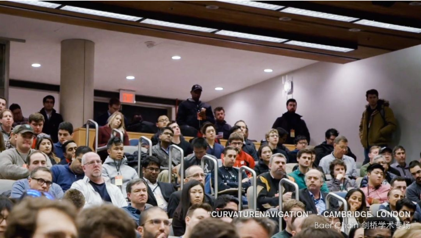

1
On June 25th, Baer Chain’s Curvature Navigation Developers Conference was held in the UK and continued its global influence expansion journey at the University of Cambridge.
Vincent, the CEO of Baer Chain, attended the academic conference at the University of Cambridge, talking about the development of the blockchain applications. Furthermore, on the conference, he and Blockchain researchers discussed about the development and the future of blockchain technology.
2
At the conference, Vincent delivered an academic speech on the topic of the blockchain and its applications and talked about the applications of blockchain technology in real life, the development progress of Baer Chain’s project, and the technical advantages of Baer Chain.

As an important achievement of the fourth industrial revolution, the blockchain is known as a new round of technological revolution that can reshape the global economic structure. In the early days of the outbreak of this industry, we should think more about what real changes that blockchain technology can make. Is it just a matter of subverting the revolution, or should we combine blockchain technology with traditional industries?
Regarding this topic, Vincent analyzed the current applications of blockchain technology in the fields of medicine, games, finance, etc. Through some classic cases, he expressed his expectations for blockchain technology: "With the development of the technology, the blockchain will implement its applications in more fields, and these applications will definitely bring some positive changes to the whole society."

In addition, Vincent also talked about his views on the development of “blockchain+games”. “The current game industry is ignoring the entertainment attributes while pursuing asset attributes. In this difficult situation, how to find a balance between assets and entertainment attributes is a question that Baer Chain has been thinking about and constantly exploring."

3
This year, cryptocurrency experienced another round of bull markets. Although the short-term wealth effect brought by cryptocurrency is huge, in the long run, cryptocurrency, which is highly concerned by the public, is only a small part in the development of blockchain technology.
The more we are in this capital market craze, the more we should be rational since Baer Chain is the pioneer of the blockchain game industry. Moreover, we should switch our focus to blockchain technology itself, and listen to the voice of the professionals and foreseen the development trends of the technology.

Vincent admitted that Europe has always been one of the most important markets for Baer Chain's global layout and he really likes the strong atmosphere at the University of Cambridge. Therefore, he finally decided to hold the event at the University of Cambridge, and he hoped to work with experts to explore the most advanced academic research in the blockchain.
After the UK, Baer Chain's Curvature Navigation Developers Conference tour will continue to be hold in North America.